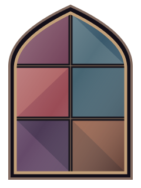

Clone do TabNews
Projeto desenvolvido durante meus estudos no curso.dev. Mantenho o repositório ativo para praticar desenvolvimento de software e registrar minha evolução.
Ver repositório do projetoEngenharia • Desenvolvimento
Tenho 11 anos de experiência em serviços de tecnologia para diagnóstico médico por imagem. Atualmente, estudo desenvolvimento full stack e construo projetos para transformar esse aprendizado em prática.

Sou formado em Engenharia Eletrônica e sempre tive afinidade com computadores e tecnologia. Trabalhei por 11 anos na área de serviços de uma multinacional de diagnóstico médico por imagem; nos últimos quatro, atuei como Especialista de Redes e Serviços.
Hoje estou em transição de carreira para desenvolvimento de software. Estudo desenvolvimento full stack no curso.dev e uso este portfólio para registrar meus projetos e minha evolução.
Projeto desenvolvido durante meus estudos no curso.dev. Mantenho o repositório ativo para praticar desenvolvimento de software e registrar minha evolução.
Ver repositório do projetoMeu primeiro projeto pessoal: uma página criada com HTML e CSS para apresentar minha trajetória, meus estudos e meus projetos.
Ver repositório do portfólio